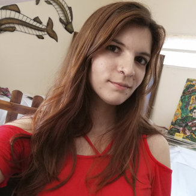

Diseño UX/UI
- Investigación
- Wireframes
- Prototipos
- Design systems
- User flows
Trabajo como Especialista en UX/UI
Diseñadora gráfica con título de grado y una sólida trayectoria en tecnología, enfocada en crear experiencias visuales impactantes, intuitivas y funcionales. Actualmente formo parte del equipo de Diseño UX/UI de una entidad financiera en proceso de convertirse en banco.

Del wireframe al sitio publicado: acompaño el proceso completo, cuidando tanto la lógica del producto como el detalle visual.
Una selección de proyectos de producto digital, desarrollo web e identidad visual. Hacé clic en las imágenes para verlas en grande.
Proyecto integral: identidad de marca, sistema de diseño con componentes reutilizables, y el diseño de la web pública, el dashboard de gestión y el CRM de asistentes para organizadores de talleres culturales.
Maquetación del sitio web institucional, cuidando la jerarquía de contenidos, la consistencia visual y el comportamiento responsive en todos los dispositivos.
Más de un año liderando el proyecto de inicio a fin: relevamiento con siete user personas, mapa de roles y permisos, wireframes de toda la plataforma, un design system documentado y el prototipo navegable. El proyecto está bajo acuerdo de confidencialidad: el caso cuenta el proceso y las decisiones de diseño, no la operación del cliente.
Mi proceso no es una línea recta: cada entrega vuelve a alimentar la investigación. Tocá cada fase para ver qué incluye.
Despejar dudas antes de avanzar, entender el funcionamiento y detectar lo que no está claro.
Análisis de flujos completos, de patrones de UX y microcopy, definición de KPI.
Entrevistas cualitativas con usuarios para identificar fricciones y momentos de abandono, y priorizar necesidades.
Journey maps, user personas, puntos de dolor, construcción del flujo de usuario y creación de wireframes.
Design critique: priorización por impacto contra esfuerzo, propuestas iniciales y base para la fase de ideación.
Aplicación del sistema de diseño —componentes, tipografías, colores y microinteracciones definitivas— sobre el flujo aprobado.
Revisión final con negocio, producto y desarrollo para asegurar viabilidad técnica y alineación de objetivos.
Implementación de los cambios y correcciones surgidos en la fase de validación.
Preparación del archivo para desarrollo —especificaciones, assets, flujos limpios y links de Figma— más una sesión de alineación con el equipo para resolver dudas.
Trabajo con metodología ágil: entregas cortas, revisión continua con negocio y desarrollo.
Me especializo en diseñar experiencias digitales para productos financieros. Actualmente participo en el equipo de diseño y optimización de:
Mi trayectoria comenzó colaborando con pymes y emprendedores, construyendo su presencia digital desde cero a través de identidad visual, web y contenido. Esta intersección entre diseño gráfico, producto y código define mi enfoque actual.
Haber estudiado las bases de programación me ayuda a diseñar con criterio real. Esto hace que las conversaciones con desarrollo sean más simples, reduciendo dudas a la hora de implementar los componentes.
Me capacito de forma constante para estar a la vanguardia en tecnologías como la inteligencia artificial y en procesos que mejoran mi flujo de trabajo.
“Mi objetivo es fusionar diseño y tecnología para desarrollar soluciones que cautiven a las personas.”
Banca Web Empresa, apps móviles, sistemas internos y sitio institucional.
Diseño de interfaces, branding, sitios web en WordPress y contenido visual.
Talleres de productividad y desarrollo de sistemas de trabajo con Notion.
Sitios en WordPress e identidad visual para emprendedores y comercios.
Trabajos de branding, diseño editorial, maquetación de libros y revistas para Entidades Estatales.
Base académica en comunicación visual, ampliada con UX/UI y desarrollo web.
 Figma
Figma Notion
Notion Illustrator
Illustrator Photoshop
Photoshop Premiere Pro
Premiere Pro After Effects
After Effects WordPress
WordPress HTML5
HTML5 CSS3
CSS3 JavaScript
JavaScript GitHub
GitHubHablemos sobre cómo puedo aportar valor a tu equipo de diseño o al próximo proyecto de tu marca.